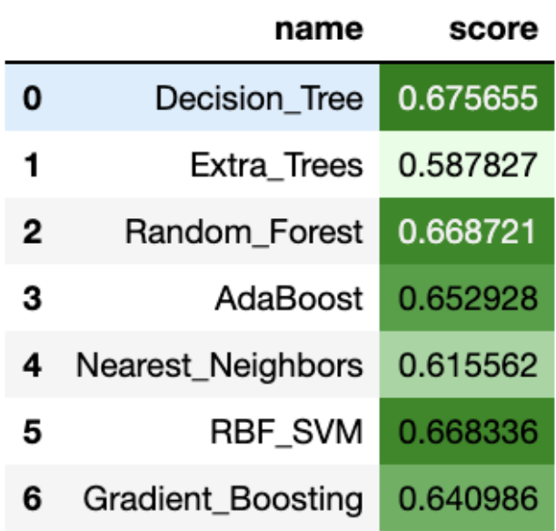
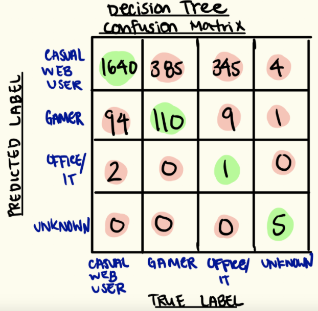
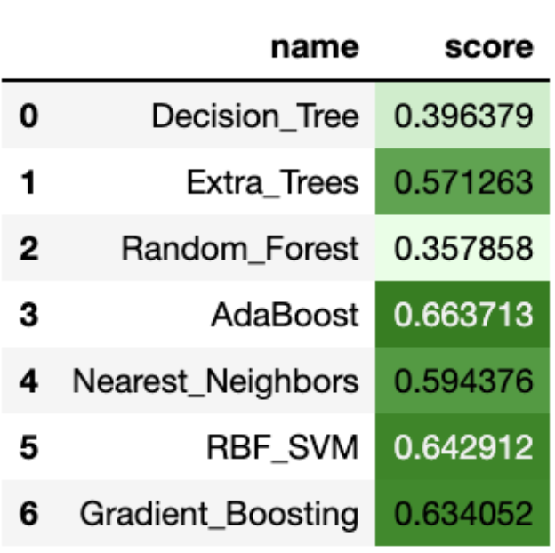
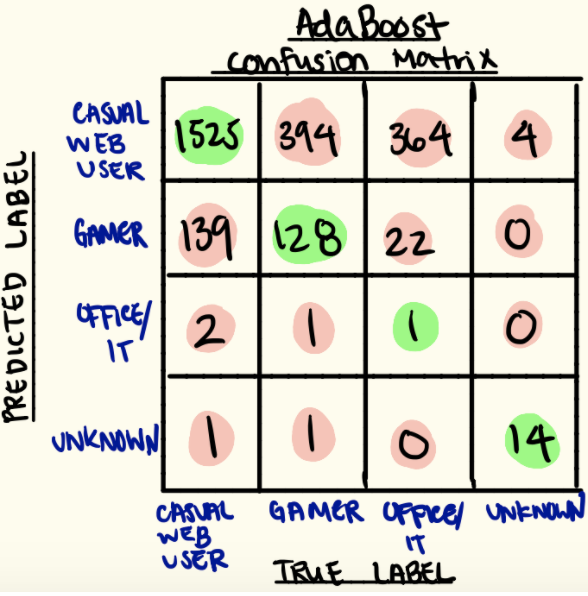
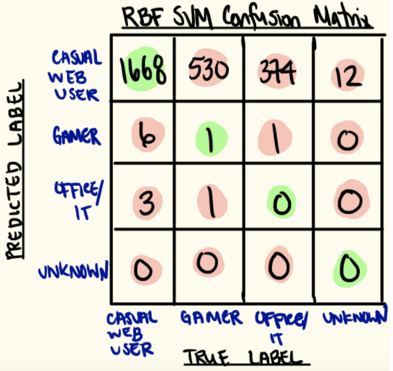
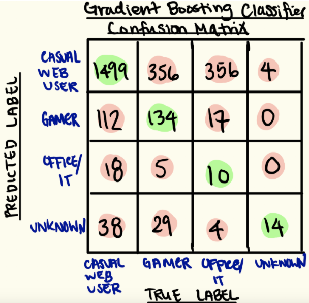
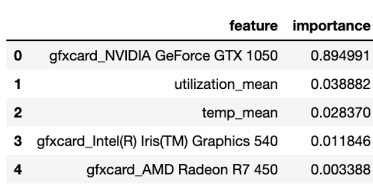

During the first half of this project, we learned about Intel’s telemetry framework. The framework allows remote data collection from devices with Windows operating systems. Two important components of the telemetry framework are the Input Library (IL) and Analyzer Task Library (ATL). The IL exposes metrics from a device and the ATL generates on-device statistics from the data collected by the IL. In the second half of the project, we used pre-collected data provided by Intel that used their telemetry framework to create a classification model. Our goal with the model was to predict the persona of a user using their computer’s specifications, CPU utilization, CPU temperature, and time spent on certain types of applications. User personas were provided by Intel which classified if users were casual web users, gamers, communication, etc.. The classifications of these personas were done by Intel based on the amount of time users spent on certain applications based on their usage of different types of .exe files. For example, if a majority of a device’s time is spent on an application like Skype, they are most likely classified as a communication user. Similarly, if a user spends a majority of their time on the League of Legends .exe file, they are most likely classified as a gamer. After training multiple classification models, we were able to predict user personas with 64% accuracy using a gradient boosting classifier.
We used four datasets to answer this question which were provided by the Intel Corporation team – hw_metric_histo.csv, system_sysinfo_unique_normalized.csv, frgnd_backgrnd_apps.csv, and ucsd_apps_exe_class.csv. All four datasets were pre-collected by Intel using Intel’s System Usage Report (SUR) collector using their telemetry framework. hw_metric_histo contains information about a laptop’s average CPU utilization and temperature. system_sysinfo_unique_normalized contains data on a device’s specifications (CPU, GPU, number of cores, etc.) and their predetermined persona provided by Intel (gamer, casual user, office, entertainment, etc.). frgnd_backgrnd_apps.csv provides information on the devices’ time spent on certain applications and ucsd_apps_exe_class.csv contains information on the .exe files’ application type classification. By combining these datasets, we created a dataframe with the device’s specifications, CPU utilization, CPU temperature, and application usage to predict the respective user’s persona. To make our predictions, we used multiple scikit-learn classification models. We trained a total of seven different classification models, but ultimately chose to analyze and delve deeper into our radial basis function SVM, AdaBoost, and gradient boosting classification models based on their performance and some interesting shortcomings. There were a total of eleven personas provided within the dataset: web user, casual user, gamer, casual gamer, office/productivity, content creator/IT, communication, Windows Store application user, entertainment, file & network sharer, and unknown. We believe that some personas such as web users and casual users are very similar in terms of their device specifications; thus, we made an assumption that features such as CPU utilization, CPU temperature, etc. would be similar as well. Because of this, we decided to reduce the 11 different classifications down to four categories. Web users, casual users, communication, Windows Store application users, entertainment, and file & network sharers were categorized as “casual web users” (encoded as 0). Gamers and casual gamers were labeled as “gamers” (encoded as 1). Office/productivity and IT/content creators were condensed into “IT/content creators” (encoded as 2). Lastly, the unknown category remained as “unknown” (encoded as 3). These categories were numerically encoded so that they could be used in a machine learning model. With the encoded target variables and the prepared features from the aforementioned datasets, we were ready to begin training our classification models.
To begin model selection, we ran a for-loop training and tested multiple scikit-learn classification models: decision trees, extra trees, random forest, AdaBoost, three nearest neighbors, radial basis function SVM, and gradient boosting classifiers. The data was split with 80% of the data as the training set and the other 20% as the test set using scikit-learn’s .train_test_split(). Inside the for loop, the models were trained, tested against the test set, and then scored using scikit-learn’s .score() function. The top five performing classification models were decision tree, random forest, radial basis function SVM, AdaBoost, and gradient boosting classification with accuracy scores of 67.67%, 66.87%, 66.83%, 65.29% and 64.10%, respectively (see Figure 1).
Albeit the decision tree model performed the best, we realized that it was not doing well in predicting users who were not casual web users. Because a majority of the user personas in our dataset are “casual web users”, the model could classify everyone as a “casual web user” and still achieve a higher accuracy score due to class imbalance. The decision tree, random forest, AdaBoost, and radial basis function SVM all suffered from this flaw. A confusion matrix of our decision tree classifier is shown below to depict the issue of class imbalance (see Figure 2).
From the figure, we can see that it does a good job at classifying the casual users with 94.47% accuracy; however, the model is unable to classify gamers, IT/office users, and unknowns consistently. From this initial run of model testing, we knew that we needed to better handle the class imbalance.
To fix class imbalance, we added scikit-learn’s class_weight = ‘balanced’ parameter to the decision tree, extra trees, random forest, and radial basis function SVM. Adding this parameter had large effects on some models. Accounting for class imbalance in the decision tree and random forest models dropped the models’ accuracy from 65% to 40% and 64% to 36%, respectively. The accuracy of extra trees and radial basis function SVM did not change much from adding the class_weight = ‘balanced’ parameter. Initially, the accuracy of the extra trees and radial basis function SVM were 65% and 64%, respectively; however, after accounting for class imbalance the accuracies were 67% and 65%, respectively. The updated accuracy scores are shown below (see Figure 3).
After adding the class_imbalance parameter, our top three models were the AdaBoost, radial basis function SVM, gradient boosting classifiers.
The AdaBoost classifier received an overall accuracy of 66%. The classifier predicted casual web users, gamers, office and productivity users, and unknowns with 91%, 24%, 0%, and 78% accuracy, respectively. The AdaBoost classifier still has a flaw with class imbalance as its stronger performance was based on its strong bias towards classifying most users as a casual web user. The confusion matrix is provided for a more in-depth visualization of its performance (see Figure 4).
The SVM classifier received an overall accuracy of 64%. The classifier predicted casual web users, gamers, office and productivity users, and unknowns with 99%, 0%, 0%, and 0% accuracy, respectively. Even though the class_imbalance parameter was set to ‘balanced’, the model had a very strong bias towards casual web users. The confusion matrix is provided for a more in-depth visualization of its performance (see Figure 5).
The gradient boosting classifier received an overall accuracy of 63%. The classifier predicted casual web users, gamers, office and productivity users, and unknowns with 87%, 26%, 3%, and 78% accuracy, respectively. The gradient boosting classifier did the best overall. The model lost some accuracy with the predicting causal web users, but gained some accuracy compared to the other models for predicting gamers, office and productivity users, and unknowns. The confusion matrix is provided for a more in-depth visualization of its performance (see Figure 6).
Because our gradient boosting classifier had the best overall performance, we decided to examine the most important features for the model. Using scikit-learn’s feature_importances_ function, we looked at the model’s five most important features. NVIDIA’s GeForce GTX 1050 graphics cards, average CPU utilization, average CPU temperature, Iris 540 graphics cards, and AMD Radeon R7 450 graphics were our most important features (see Figure 7).
Our goal was to create a classification model to predict a user’s persona based on their device specifications, CPU utilization, CPU temperature, and their time spent on different types of applications. We trained a total of seven models through the scikit-learn package: decision trees, extra trees, random forest, AdaBoost, three nearest neighbors, radial basis function SVM, and gradient boosting classifiers. After training and testing all of the models during our initial run, we realized that our gradient boosting classification model performed the best as it was able to predict casual web users and unknown users with 87% and 78% accuracy, respectively. It predicted gamers and office and productivity users with 26% and 3% accuracy, respectively. Though the accuracy of these two categories were not particularly the greatest, they did a much better job of predicting these categories in comparison to our AdaBoost and radial basis function SVM models. We found that our best model was the gradient boosting classifier which predicts a user’s persona with 64% accuracy. Taking a deeper look into our gradient boosting classifier and its features, we saw that the presence of NVIDIA’s GeForce GTX 1050 graphics cards, Iris 540 graphics cards, AMD Radeon R7 450 graphics cards as well as average CPU utilization and average CPU temperature were our most important features in predicting a user’s persona.
We would like to thank Professor Aaron Fraenkel, Balaji Shankar Balachandran, and Farouk Mokhtar from the UC San Diego Halicioğlu Data Science Institute for their help throughout the quarter. We would also like to thank our mentors Jamel Tayeb, Sruti Sahani, Chansik Im, Praveen Polasam, Bijan Arbab, and Julien Sebot from the Intel Corporation for their guidance and feedback during our project.